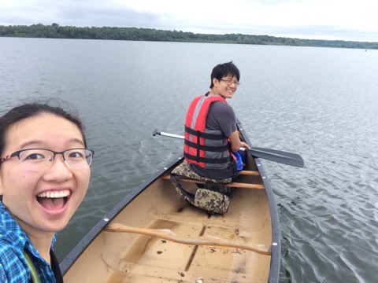

Michael is research associate at the University of Nebraska Lincoln. He is fascinated by using the power of technology and the internet of things to gather information and data from our everyday lives.
Kelly is a long-time stream researcher and citizen monitoring volunteer, ultimately seeking to find ways to better understand the natural world around us.
Streams are really important. They provide essential functions such as drinking water, crop irrigation, recreation, habitat for aquatic ecosystems, and hydroelectric power. To gain a better on the state of our local waterways, each year, thousands of volunteers and researchers participate in stream monitoring. They monitor a variety of parameters, including temperature, pH, water flow, and dissolved oxygen, which have implications for overall stream health. For example, warmer streams are often lower in dissolved oxygen and subsequently support different aquatic species.
We think that the internet of things will transform how we extract information from the environment. Currently, stream information is labor intensive and often requires expensive equipment in order to collect consistent data.